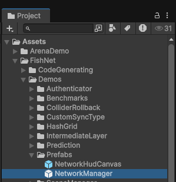
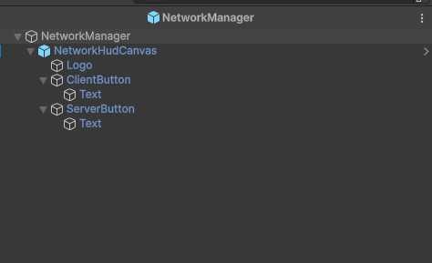
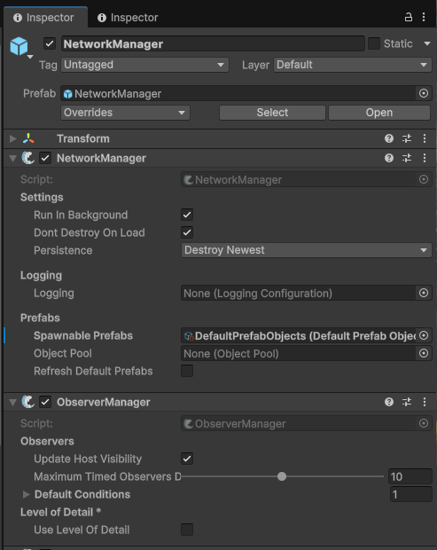
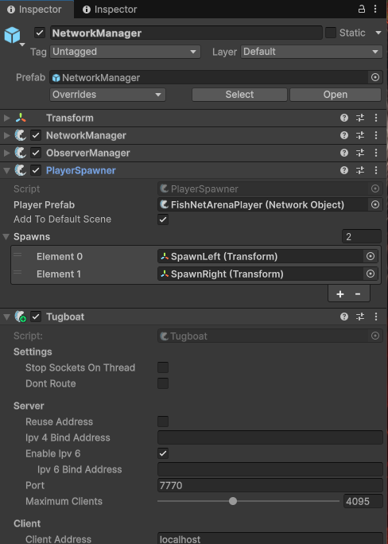
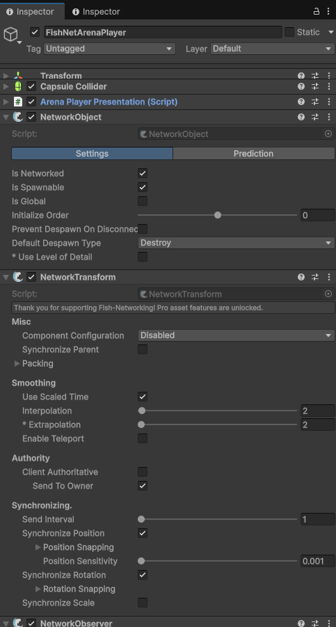
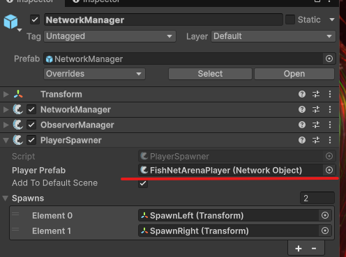
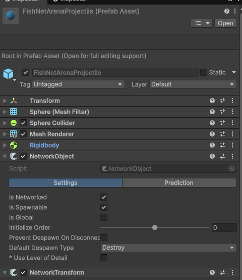
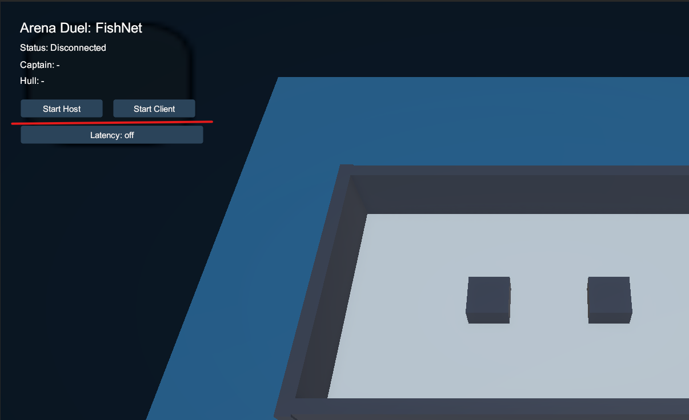

Уважаемый студент! В этой практике вы перенесёте проект с Unity NGO на FishNet. Код придётся переписать — это нормально. Сравнивайте API двух фреймворков и обращайтесь к документации FishNet.
Практика 3. Миграция на FishNet и предсказание движения

Цель
Перенести проект с NGO на FishNet и настроить клиентское предсказание:
- импортировать FishNet и настроить
NetworkManager; - переписать скрипты синхронизации с NGO API на FishNet API;
- настроить клиентское предсказание (CSP) для плавного движения;
- протестировать игру с искусственной задержкой 200–500 мс.
Ожидаемый результат
После выполнения практики:
- проект полностью работает на FishNet (NGO удалён);
- движение, стрельба и синхронизация HP функционируют как раньше;
- при пинге 200 мс движение остаётся плавным благодаря предсказанию;
- студент понимает ключевые различия API между NGO и FishNet.
Подготовка проекта
На этом этапе мы не пишем новый геймплей. Задача — заменить сетевую инфраструктуру NGO на FishNet так, чтобы в сцене появились правильные FishNet-компоненты и проект снова запускался.
0.1. Сделайте безопасную копию
- Сделайте резервную копию проекта (новая ветка в Git или копия папки).
- Откройте сцену, в которой раньше стоял NGO
NetworkManager. - Убедитесь, что у вас есть рабочие префабы игрока и снаряда из прошлой практики.
0.2. Удалите старые NGO-компоненты
- Откройте Window → Package Manager.
- Удалите пакет
Netcode for GameObjects. - Удалите пакет
Unity Transport, если он использовался только для NGO. - В сцене удалите старый объект NGO
NetworkManagerили снимите с него NGO-компоненты. - Если на префабах остались компоненты NGO
NetworkObject,NetworkTransformили скрипты сusing Unity.Netcode;, временно оставьте префабы как есть, но будьте готовы заменить эти компоненты на FishNet-аналоги в следующих шагах.
0.3. Установите FishNet
- Откройте Window → Package Manager.
- Нажмите + в левом верхнем углу.
- Выберите вариант установки FishNet: через Asset Store, через скачанный
.unitypackageили через Git URL, если преподаватель дал ссылку. - После импорта дождитесь, пока Unity закончит компиляцию.
- В проекте должна появиться папка
Assets/FishNet. Если FishNet установлен через Git URL, он может находиться вPackages/FishNet: Networking Evolved.
0.4. Добавьте FishNet NetworkManager в сцену
Для студентов с нуля используйте готовый prefab. Это самый простой и наименее ошибочный путь.
- В окне Project найдите prefab
FishNet/Demos/Prefabs/NetworkManager.prefab. - Если FishNet стоит через Git URL, ищите его в
Packages/FishNet: Networking Evolved/Demos/Prefabs/NetworkManager.prefab. - Перетащите prefab
NetworkManagerв Hierarchy вашей игровой сцены. - Выделите добавленный объект
NetworkManagerв Hierarchy. - Проверьте в Inspector, что на объекте есть FishNet-компоненты
NetworkManager,ObserverManagerиPlayerSpawner. - Раскройте объект
NetworkManagerв Hierarchy и найдите дочерний объектNetworkHudCanvas. Он нужен только для тестов: через него можно запускать Server, Client или Host кнопками в Game View.
{kind=link}

NetworkManager в Project и перетащите его в сцену.{kind=link}

NetworkManager с дочерним NetworkHudCanvas.{kind=link}

NetworkManager.{kind=link}

Если готового prefab нет: ручная сборка NetworkManager
- Создайте пустой объект в сцене: GameObject → Create Empty.
- Назовите его
NetworkManager. - Нажмите Add Component и добавьте компонент FishNet
NetworkManager. Не перепутайте с NGO-компонентом. - Добавьте компонент
ObserverManager. - В
ObserverManagerв спискеDefault Conditionsдобавьте условиеSceneCondition, чтобы клиенты видели сетевые объекты активной сцены. - Добавьте компонент
PlayerSpawner. - Добавьте транспорт
Tugboatна этот же объект, если он не появился автоматически или если вам нужно вручную менять порт, адрес и симуляцию задержки.
0.5. Проверьте транспорт Tugboat
- Выделите объект
NetworkManager. - В Inspector найдите компонент
Tugboatили настройки транспорта FishNet. - Оставьте порт по умолчанию, если преподаватель не дал другой. В курсе можно использовать
7770. - Для локального теста адрес клиента должен быть
localhostили127.0.0.1. - На этом этапе не включайте симуляцию лага. Она понадобится только в Этапе 4.
0.6. Подготовьте prefab игрока
- Откройте prefab игрока в Prefab Mode.
- Удалите NGO-компоненты
NetworkObjectиNetworkTransform, если они остались после прошлой версии проекта. - Нажмите Add Component и добавьте FishNet
NetworkObject. - В компоненте
NetworkObjectвключитеIs Spawnable, потому что игрок создаётся во время подключения клиента. - Добавьте FishNet
NetworkTransform, если движение пока синхронизируется обычной transform-синхронизацией без prediction. - Если на игроке уже есть ваш скрипт движения, позже он должен наследоваться от FishNet
NetworkBehaviour, а не от NGONetworkBehaviour. - Сохраните prefab игрока.
{kind=link}

NetworkObject. Для создания игрока по сети включите Is Spawnable.0.7. Назначьте игрока в PlayerSpawner
- Вернитесь в сцену и выделите объект
NetworkManager. - В компоненте
PlayerSpawnerнайдите полеPlayer Prefab. - Перетащите туда prefab игрока из окна Project.
- Если у вас есть точки появления, создайте пустые объекты
SpawnPoint_1,SpawnPoint_2и разместите их на карте. - Перетащите эти точки в список
SpawnsкомпонентаPlayerSpawner. - Если список
Spawnsпустой, FishNet создаст игрока в позиции, которая сохранена внутри prefab игрока.
{kind=link}

PlayerSpawner обязательно назначьте prefab игрока в поле Player Prefab.0.8. Подготовьте prefab снаряда
- Откройте prefab снаряда в Prefab Mode.
- Удалите старый NGO
NetworkObject, если он есть. - Добавьте FishNet
NetworkObject. - Включите
Is Spawnable, потому что снаряд создаётся кодом во время игры. - Добавьте FishNet
NetworkTransform, если позиция снаряда должна синхронизироваться между клиентами. - Сохраните prefab снаряда.
{kind=link}

NetworkObject с включённым Is Spawnable, иначе серверный спавн не будет корректно работать у клиентов.0.9. Проверьте DefaultPrefabObjects
В старых туториалах часто пишут «добавьте префабы в список вручную». В актуальном FishNet этот список обычно заполняется автоматически.
- Проверьте, что у runtime-префабов игрока и снаряда есть FishNet
NetworkObject. - Проверьте, что у этих префабов включён флаг
Is Spawnable. - Сохраните проект и дождитесь компиляции Unity.
- Если FishNet создаёт или обновляет asset
DefaultPrefabObjects, не редактируйте его без необходимости. - Если снаряд не появляется у клиентов, первым делом проверьте именно
NetworkObject → Is Spawnableна prefab снаряда.
0.10. Первый запуск без кода prediction
- Нажмите Play в Unity.
- В Game View должны появиться тестовые кнопки FishNet из
NetworkHudCanvas. - Нажмите Start Host или отдельно Start Server и Start Client.
- Если
Player Prefabназначен правильно, в сцене должен появиться объект игрока. - Если Unity пишет, что player prefab пустой, вернитесь к пункту 0.7 и назначьте prefab в
PlayerSpawner.
{kind=link}

NetworkHudCanvas показывает кнопки запуска сервера, клиента и хоста прямо в Game View.Проверь
Проект компилируется без ошибок после удаления NGO и импорта FishNet. В сцене есть FishNet NetworkManager, ObserverManager, PlayerSpawner, тестовый NetworkHudCanvas, настроенный Tugboat, а префабы игрока и снаряда имеют FishNet NetworkObject.
Этап 1. Замена базовых скриптов на FishNet API
Перепишите сетевые скрипты, заменяя атрибуты и базовые классы NGO на аналоги FishNet.
- Замените
NetworkBehaviourиз NGO наNetworkBehaviourиз FishNet. - Замените
NetworkVariable<T>на[SyncVar]с хукомOnChange. - Замените
[ServerRpc]на[ServerRpc]FishNet (атрибут тот же, но пространство имён другое). - Замените
[ClientRpc]на[ObserversRpc]. - Замените проверку
IsOwnerнаbase.IsOwner.
Подсказка: таблица соответствий NGO → FishNet
// ===== NGO ===== // ===== FishNet =====
using Unity.Netcode; using FishNet.Object;
using FishNet.Object.Synchronizing;
NetworkBehaviour NetworkBehaviour
NetworkVariable<int> HP = new(100); [SyncVar] public int HP = 100;
[ServerRpc] [ServerRpc]
void DoSomethingServerRpc() {} void DoSomething(/* ... */) {}
[ClientRpc] [ObserversRpc]
void NotifyClientRpc() {} void NotifyObservers(/* ... */) {}
IsOwner base.IsOwner
IsServer base.IsServerInitialized
OnNetworkSpawn() public override void OnStartNetwork()
OnNetworkDespawn() public override void OnStopNetwork()
NetworkObject.Spawn() ServerManager.Spawn(obj)
NetworkObject.Despawn() ServerManager.Despawn(obj)Проверь
Проект компилируется. Все скрипты используют пространство имён FishNet вместо Unity.Netcode.
Этап 2. Перенос движения и синхронизации
Убедитесь, что базовый геймплей работает на FishNet так же, как работал на NGO.
- Переведите скрипт движения на FishNet: проверка
base.IsOwner, использованиеNetworkTransformот FishNet. - Переведите синхронизацию HP и ника на
[SyncVar]с хуками для обновления UI. - Переведите стрельбу: спавн снаряда через
ServerManager.Spawn(). - Проверьте подключение Host/Client и базовый геймплей.
Подсказка: SyncVar с хуком для HP
В FishNet [SyncVar] заменяет NetworkVariable. Хук вызывается автоматически при изменении значения.
using FishNet.Object;
using FishNet.Object.Synchronizing;
using TMPro;
using UnityEngine;
public class PlayerNetwork : NetworkBehaviour
{
[SyncVar(OnChange = nameof(OnHpChanged))]
public int HP = 100;
[SyncVar(OnChange = nameof(OnNicknameChanged))]
public string Nickname = "Player";
[SerializeField] private TMP_Text _hpText;
[SerializeField] private TMP_Text _nicknameText;
private void OnHpChanged(int oldValue, int newValue, bool asServer)
{
_hpText.text = $"HP: {newValue}";
}
private void OnNicknameChanged(string oldValue, string newValue, bool asServer)
{
_nicknameText.text = newValue;
}
[ServerRpc]
public void SetNicknameServerRpc(string nickname)
{
Nickname = string.IsNullOrWhiteSpace(nickname)
? $"Player_{OwnerId}"
: nickname.Trim();
}
}Проверь
Два окна подключаются, персонажи двигаются, HP и ник синхронизируются, стрельба работает — всё на FishNet.
Этап 3. Настройка клиентского предсказания (CSP)
Клиентское предсказание позволяет игроку видеть мгновенный отклик на свой ввод, даже если сервер ещё не подтвердил действие.
- Используйте механизм
ReplicateиReconcileот FishNet для движения. - Создайте структуру входных данных (
MoveData) с горизонтальным и вертикальным вводом. - В методе
Replicateприменяйте движение на основе входных данных. - В методе
Reconcileкорректируйте позицию при расхождении с сервером.
Подсказка: каркас CSP-движения
FishNet предоставляет атрибуты [Replicate] и [Reconcile] для автоматического предсказания и отката.
using FishNet.Object;
using FishNet.Object.Prediction;
using UnityEngine;
public struct MoveData : IReplicateData
{
public float Horizontal;
public float Vertical;
private uint _tick;
public void Dispose() { }
public uint GetTick() => _tick;
public void SetTick(uint value) => _tick = value;
}
public struct ReconcileData : IReconcileData
{
public Vector3 Position;
private uint _tick;
public void Dispose() { }
public uint GetTick() => _tick;
public void SetTick(uint value) => _tick = value;
}
public class PlayerMovementPredicted : NetworkBehaviour
{
[SerializeField] private float _speed = 5f;
public override void OnStartNetwork()
{
base.TimeManager.OnTick += OnTick;
}
public override void OnStopNetwork()
{
base.TimeManager.OnTick -= OnTick;
}
private void OnTick()
{
// Владелец собирает ввод и отправляет на сервер.
if (base.IsOwner)
{
MoveData md = new MoveData
{
Horizontal = Input.GetAxisRaw("Horizontal"),
Vertical = Input.GetAxisRaw("Vertical")
};
Replicate(md);
}
else
{
Replicate(default);
}
// Сервер периодически шлёт «истинное» состояние для коррекции.
if (base.IsServerInitialized)
{
ReconcileData rd = new ReconcileData
{
Position = transform.position
};
Reconcile(rd);
}
}
[Replicate]
private void Replicate(
MoveData md,
ReplicateState state = ReplicateState.Invalid,
Channel channel = Channel.Unreliable)
{
Vector3 move = new Vector3(md.Horizontal, 0f, md.Vertical).normalized;
transform.position += move * _speed * (float)base.TimeManager.TickDelta;
}
[Reconcile]
private void Reconcile(
ReconcileData rd,
Channel channel = Channel.Unreliable)
{
transform.position = rd.Position;
}
}Проверь
Движение персонажа мгновенно реагирует на ввод даже при наличии сетевой задержки. Позиция корректируется сервером без видимых рывков.
Этап 4. Тестирование с искусственным лагом
Проверьте, что предсказание действительно помогает при высоком пинге.
- В настройках транспорта FishNet (
Tugboat) включитеLatency Simulator. - Установите задержку 200 мс, затем 500 мс.
- Сравните движение с предсказанием и без (временно отключите CSP).
- Убедитесь, что при 200 мс с включённым предсказанием движение остаётся плавным.
- Обратите внимание на reconcile-коррекции: при правильной настройке они почти незаметны.
Проверь
С лагом 200 мс и включённым CSP персонаж двигается плавно. Без CSP заметна задержка между нажатием клавиши и началом движения.
Что нужно реализовать самостоятельно
- полный перенос скриптов с NGO на FishNet API;
- замену
NetworkVariableна[SyncVar]с хуками обновления UI; - замену
[ClientRpc]на[ObserversRpc]; - структуры
MoveDataиReconcileDataдля предсказания; - подключение к
TimeManager.OnTickдля tick-based движения; - тестирование и сравнение поведения с лагом и без.
Требования к сдаче
- Продемонстрировать, что проект полностью работает на FishNet (нет зависимостей от NGO).
- Показать подключение Host/Client, синхронизацию HP и ника.
- Показать движение с клиентским предсказанием.
- Продемонстрировать работу с искусственным лагом 200 мс: плавное движение с CSP.
- Показать разницу между движением с CSP и без CSP при лаге.
- Предоставить видео работы приложения с демонстрацией лага.
- Предоставить ссылку на Git-репозиторий проекта.